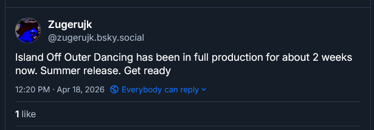
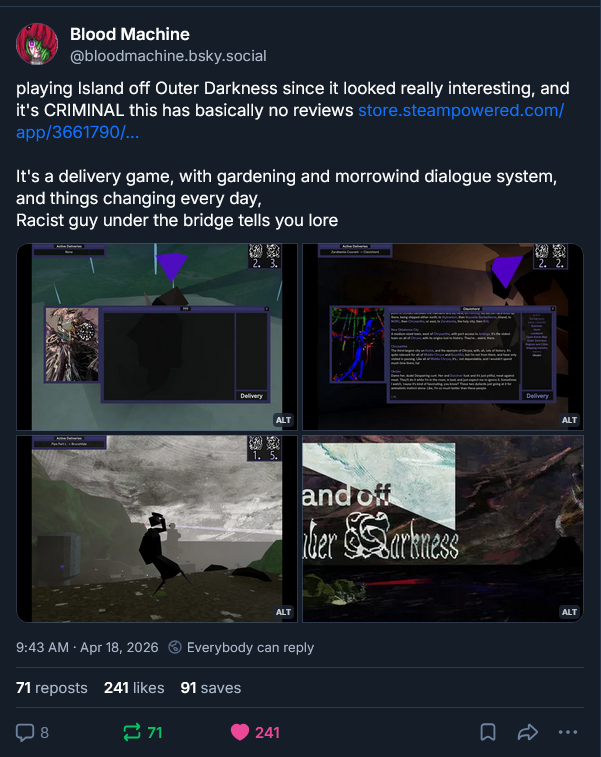
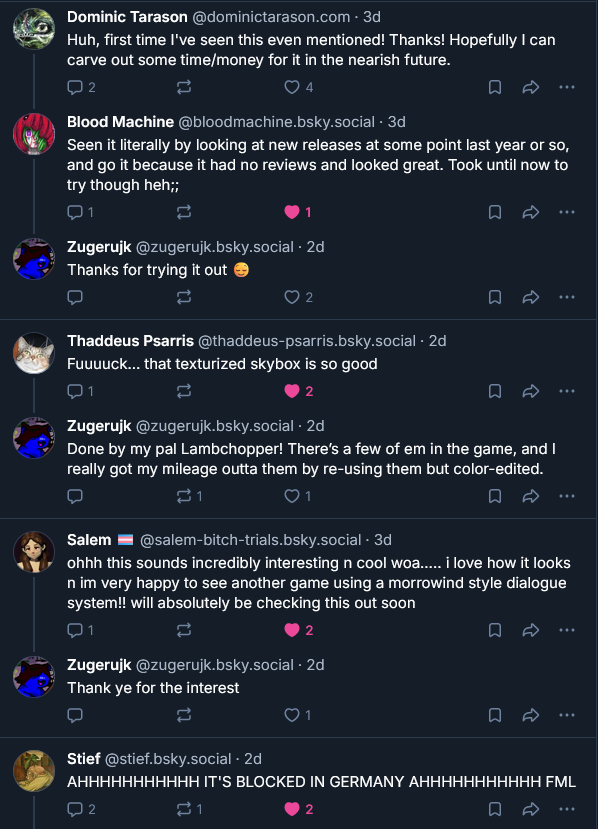
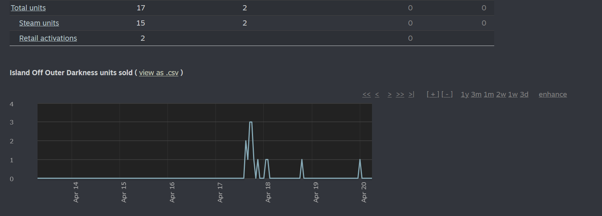
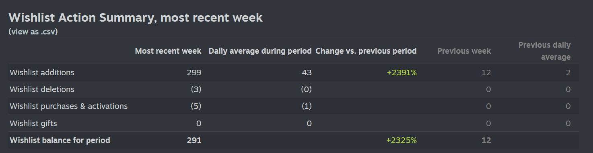
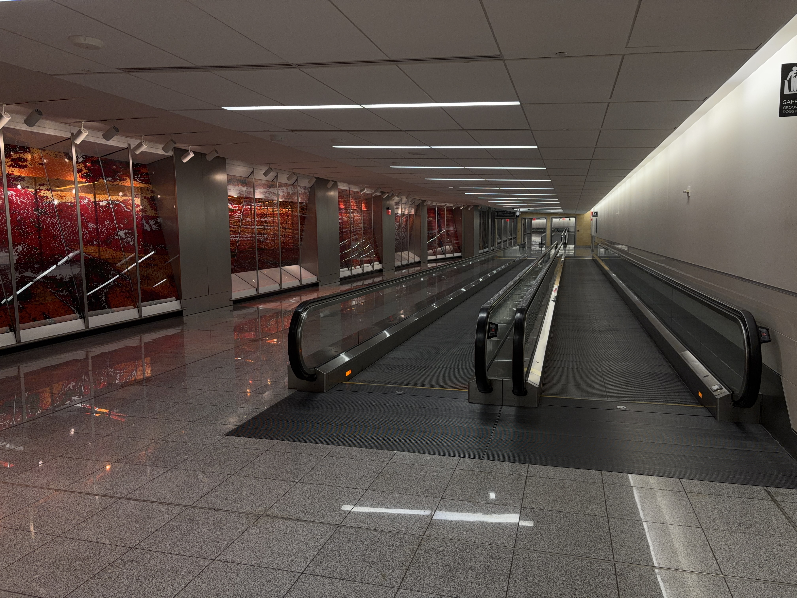
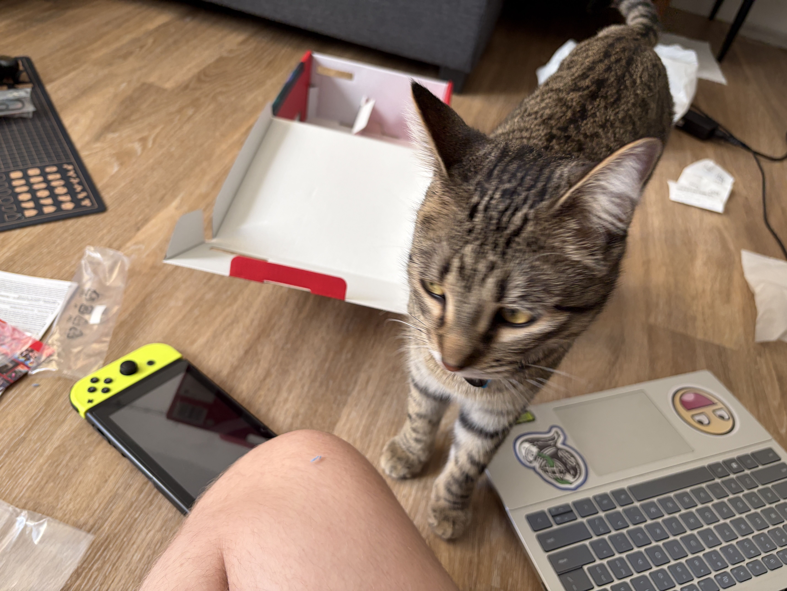

At about noon on Saturday I got some notifications on my phone that my Island Off Outer Darkness release day post on Bluesky had recieved not-insignificant engagement. And I'd been followed by about three people. I didn't think much of it, and posted this in response.

Probably the first public announcement I'm working on IOODancing full-scale.
I then, like, investigated why I was actually getting a relative shitton of engagement. Doesn't just happen out of nowhere. Checked the accounts of people that were engaging me, and, uh.

Holy shit!
241 likes. 71 reposts! People were replying to the post too, so I got to, like, respond to people about my game. Insane for this to just happen on a random Saturday 9 months after release.

Actual people I don't know talking about the game. Insane!
Everyone was extremely nice and positive about IOOD, and I ended up sending two people keys. Just crazy, seriously. I dunno how to say it but it's. Jolly. Not euphoric but jolly, having people I don't know experience Island Off Outer Darkness. And having Blood Machine talk about this thing I made. Thanks, Blood Machine.
Now, da numbers.


Wuh talkin' 'bout da numbahs.
Amazing shit.
Anyways, that evening I had a flight on Delta. 2 hour layover in Atlanta. And so I laid over for 2 hours, and my connecting was overbooked. And they were offering $900 for people to volunteer on standby. And, like, why not, you know. I had plans on Sunday (with Hayley and Morgan), but $900, man. Split-second decision really. Kind of felt out-of-body walking up and going "hey I'd like to volunteer". And then I had! And it was done.
I ended up volunteering alongside this total creepy asshole who was sooooooo mean to the gate workers. To me, he was like "oooooh if you had waited two seconds, we would've gotten $1200! (:😡". Just kinda dodged him as soon as possible and the guy working at the gate actually complimented me on dodging him, which felt weird but, like, affirming that he sucked ass. Couldn't sleep at all, and ended up just walking through the entire underground walkways of Hartsfield-Jackson Atlanta International Airport. Was definitionally liminal. Then sat down and listened to both of Folding Ideas' Mr. Beast videos.

When the hallways be empty 😳.
Morning flight was uneventful. My dad picked me up, and then we drove to Best Buy (which actually had the wrong hours on Apple Maps, so we went to a park in Eagan (a wasteland) and walked around for an hour), and I picked up a Switch 2 babyyyyyyy. There goes $566 after tax but I now own Kirby Air Riders.

Bertuch investigating what's going on 🐈.
Merry Christmas and happy holidays, folks. May you find your own Bigolas Dickolas Wolfwood — we all certainly need one.